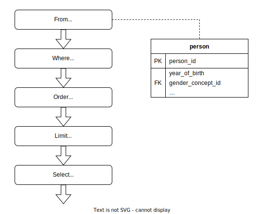
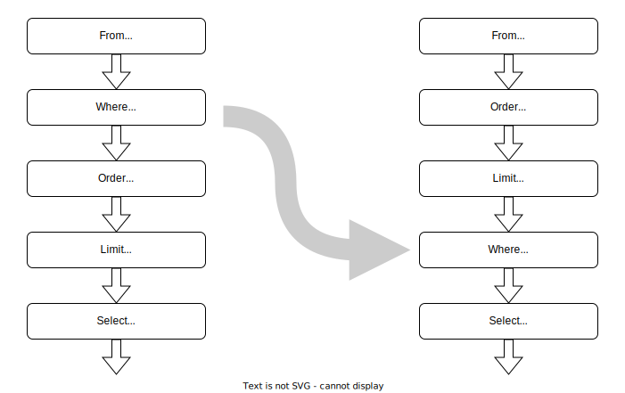
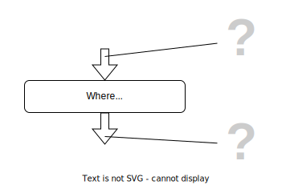
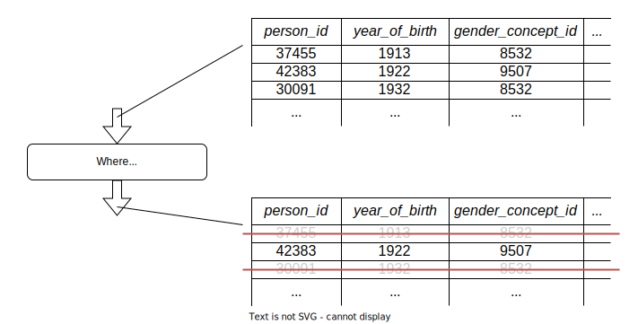
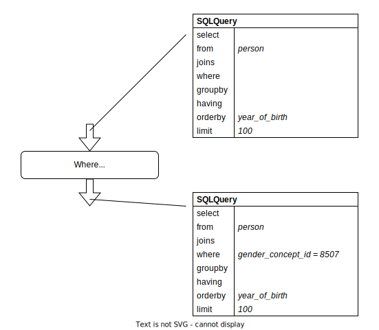
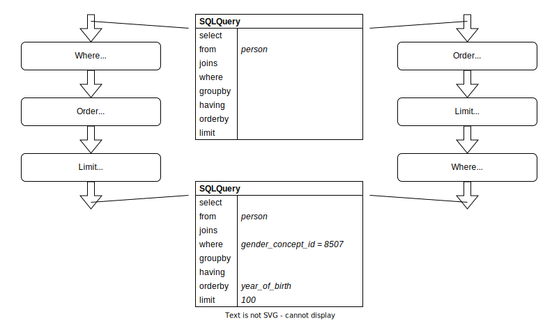

Two Kinds of SQL Query Builders
The SQL language has a paradoxical fate. Although it was deliberately designed to appeal to a human user, nowadays most of SQL code is written—or rather generated—by the computer. Many computer programs need to query some database, and, for the vast majority of database servers, the only supported query language is SQL. But generating SQL is difficult because of the complicated and obscure rules of its quasi-English grammar (its original name SEQUEL stands for Structured English Query Language). For this reason, programs that interact with a database often use specialized libraries for generating SQL queries.
One of such libraries is FunSQL. FunSQL is designed with two goals in mind: supporting the full range of SQL's querying capabilities and exposing these capabilities in a compositional, data-oriented interface. This combination of goals makes FunSQL a perfect tool for data analysis in SQL and differentiates it from all the other query building libraries. Many query builders offer good coverage of SQL features, fewer provide data-oriented interface, but only FunSQL combines them in a single package.
And yet the difference between FunSQL and other query builders is not immediately apparent. In fact, the interfaces of various query building libraries seem almost identical. A query that finds 100 oldest male patients (in the OMOP CDM database) is assembled with FunSQL as follows:
From(:person) |>
Where(Get.gender_concept_id .== 8507) |>
Order(Get.year_of_birth) |>
Limit(100) |>
Select(Get.person_id)The same query can be written in Ruby using Active Record Query Interface:
Person
.where("gender_concept_id = ?", 8507)
.order(:year_of_birth)
.limit(100)
.select(:person_id)Or in PHP with Laravel's Query Builder:
DB::table('person')
->where('gender_concept_id', '=', 8507)
->orderBy('year_of_birth')
->limit(100)
->select('person_id')In C#'s EF/LINQ:
Person
.Where(p => p.gender_concept_id == 8507)
.OrderBy(p => p.year_of_birth)
.Take(100)
.Select(p => new { person_id = p.person_id });Or in R with dbplyr:
tbl(conn, "person") %>%
filter(gender_concept_id == 8507) %>%
arrange(year_of_birth) %>%
head(100) %>%
select(person_id)In each of these code samples, the query is assembled using essentially the same interface. Stripped of its syntactic shell, the process of assembling the query can be visualized as a diagram of five processing nodes connected in a pipeline:

It is precisely the fact that the query is progressively assembled using atomic, independent components that lets us call this interface compositional.
However we did claim that FunSQL differs from all the other query building libraries, and now apparently proved the opposite? As a matter of fact, there is a difference, even if it is not reflected in notation. To demonstrate this, let us rearrange this pipeline, moving the Order and the Limit nodes in front of Where.

How does this rearrangement affect the output of the query? Perhaps unexpectedly, the answer depends on the library. With FunSQL, as well as EF/LINQ and dbplyr, it changes the output from 100 oldest male patients to the males among 100 oldest patients. But not so with the other two libraries, Active Record and Laravel, where rearranging the pipeline has no effect on the output.
To summarize, the following query builders are sensitive to the order of the pipeline nodes:
- FunSQL
- EF/LINQ
- dbplyr
And the following are not:
- Active Record
- Laravel
These are the two kinds of query builders from this article's title. But how can these libraries act so differently while sharing the same interface? To answer this question, we need to focus on what is only implicitly present on the pipeline diagram: the information that is processed by the pipeline nodes.

A node with one incoming and one outgoing arrow symbolizes a processing unit that takes the input data, transforms it, and emits the output data. While the character of the data is not revealed, it is tempting to assume it to be the tabular data extracted from the database.

But this can't be right, at least not literally, because a SQL query builder cannot read the data in the database. Instead, the query builder generates a SQL query:
SELECT "person_1"."person_id"
FROM "person" AS "person_1"
WHERE ("person_1"."gender_concept_id" = 8507)
ORDER BY "person_1"."year_of_birth"
LIMIT 100But if we assume for a moment that pipeline nodes could process the data directly, we would expect that both the pipeline and the corresponding SQL query produce the same output. In other words, the role of the pipeline is to specify the expected output of the SQL query. This is how pipeline nodes are interpreted by FunSQL and the other two libraries, EF/LINQ and dbplyr. We can call such query builders data-oriented.
The conversion of the pipeline to SQL is not always that straightforward. Even though we could freely reorder the nodes in a pipeline, we cannot do the same to the clauses in a SQL query. This is because the SQL grammar arranges the clauses in a rigid order:
FROM, followed by zero, one or moreJOIN, followed byWHERE, followed byGROUP BY, followed byHAVING, followed byORDER BY, followed byLIMIT, followed bySELECT, written at the top of the query, but the last one to perform.
This order is compatible with the first pipeline, in which the Where node is followed by Order and Limit, but not the second pipeline, where these nodes change their relative positions. So how could the second pipeline be converted to SQL? We would be out of options if we were still using the original SQL standard, SQL-86, but the next revision of the language, SQL-92, recognized this limitation. Regrettably, it did not relax this rigid clause order. Instead, SQL-92 introduced a workaround: a query can be extended by nesting it into the next query's FROM clause. This gives us a method for converting an arbitrary pipeline into SQL: break the pipeline into smaller chunks that comply with the SQL clause order, convert each chunk into a SQL query, and then nest all these queries together:
SELECT "person_2"."person_id"
FROM (
SELECT
"person_1"."person_id",
"person_1"."gender_concept_id"
FROM "person" AS "person_1"
ORDER BY "person_1"."year_of_birth"
LIMIT 100
) AS "person_2"
WHERE ("person_2"."gender_concept_id" = 8507)The SQL grammar has a number of deficiencies, including rigid clause order, query nesting, and nonsensical position of the SELECT clause. The position of SELECT violates the execution flow of the query, and this violation is aggravated by query nesting. Complex SQL queries often require multiple levels of nesting, which makes such queries bloated and difficult to interpret. This is where data-oriented query builders, which do not constrain the order of pipeline nodes, offer an improvement over plain SQL.
What about the other kind of query builders? Active Record and Laravel employ a pipeline of exactly the same form, but because it is not sensitive to the order of the nodes, it must work on a different principle. Indeed, this pipeline generates a SQL query by incrementally assembling the SQL syntax tree. Because of the rigid clause order, a SQL syntax tree can be faithfully represented as a composite data structure with slots specifying the content of the SELECT, FROM, WHERE, and the other clauses:
struct SQLQuery
select
from
joins
where
groupby
having
orderby
limit
endIndividual slots of this structure are populated by the corresponding pipeline nodes.

This explains why the pipeline is insensitive to the order of the nodes. Indeed, as long as the content of the slots stays the same, it makes no difference in what order the slots are populated.

This method of incrementally constructing a composite structure is known as the builder pattern. We can call the query builders that employ this pattern syntax-oriented.
Both data-oriented and syntax-oriented query builders are compositional: the difference is in the nature of the information processed by the units of composition. Data-oriented query builders incrementally refine the query output; syntax-oriented query builders incrementally assemble the SQL syntax tree. Their interfaces look almost identical, but their methods of operation are fundamentally different.
But which one is better? Syntax-oriented query builders have two definite advantages: they are easy to implement and they could support the full range of SQL features. Indeed, the interface of a syntax-oriented query builder is just a collection of builders for the SQL syntax tree. How complete the representation of the syntax tree determines how well various SQL features are supported.
On the other hand, syntax-oriented query builders are harder to use. As they directly represent the SQL grammar, they inherit all of its deficiencies. In particular, the rigid clause order makes it difficult to assemble complex data processing pipelines, especially when the arrangement of pipeline nodes is not predetermined.
A data-oriented query builder directly represents data processing nodes, which makes assembling data processing pipelines much more straightforward—as long as we can find the necessary nodes among those offered by the builder. But where does the builder get its collection of data processing nodes? And how can we tell if this collection is complete?
One way to implement a data-oriented query builder is to adapt a general-purpose query framework. Indeed, this is the origin of EF/LINQ, which is adapted from LINQ, and dbplyr, which is adapted from dplyr. The query framework determines what processing nodes are available and how they operate. In principle, any query framework could be adapted to SQL databases by introducing just one new node, a node that loads the content of a database table. If we place this node at the beginning of a pipeline and make the rest of it out of regular nodes, we obtain a pipeline that processes data from a SQL database. However, this pipeline will be very inefficient compared to a SQL engine, which can use indexes to avoid loading the entire table into memory and thus can process the same data much faster. This is why EF/LINQ and dbplyr generate a SQL query that replaces the pipeline as a whole. The pipeline itself no longer runs directly, but now serves as a specification, with the assumption that if it were to run, it would produce the same output as the SQL query. This method of transforming a general-purpose query framework to a SQL query builder is called SQL pushdown.
However, SQL pushdown has a serious limitation. A general-purpose query framework is not designed with SQL compatibility in mind. For this reason, some of the pipelines assembled within this framework cannot be converted to SQL. Even worse, many useful SQL queries have no equivalent pipelines and thus cannot be generated using SQL pushdown. Indeed, SQL accumulated a wide range of features and capabilities since it first appeared in 1974. The first revision of the SQL standard, SQL-86, already supported Cartesian products, filtering, grouping, aggregation, and correlated subqueries. The next revision, SQL-92, added many join types and introduced query nesting. SQL:1999 greatly expanded its analytical capabilities by adding two types of queries: recursive queries, for processing hierarchical data, and data cube queries, which generalize histograms, cross-tabulations, roll-ups, drill-downs, and sub-totals. The follow-up revision, SQL:2003, added support for aggregate functions over a running window. Admittedly, SQL is a quintessential enterprise abomination, a hodgepodge of features added to support every imaginable use case, but with inadequate syntax, weird gaps in functionality, and no regards to internal consistency. Nevertheless, the breadth of SQL's capabilities has not been matched by any other query framework, including LINQ or dplyr. So when we generate SQL queries using EF/LINQ or dbplyr, a large subset of these capabilities remains inaccessible.
FunSQL is a data-oriented query builder created specifically to expose full expressive power of SQL. Unlike EF/LINQ and dbplyr, FunSQL was not adapted from an existing query framework, but was carefully designed from scratch to match SQL's capabilities. These capabilities include, for example, support for correlated subqueries and lateral joins (with Bind node), aggregate and window functions (using Group and Partition nodes), as well as recursive queries (with Iterate node). This comprehensive support for SQL capabilities makes FunSQL the only SQL query builder suitable for assembling complex data processing pipelines. Moreover, even though FunSQL pipelines cannot be run directly, every FunSQL node has a well-defined data processing semantics, which means that, in principle, FunSQL could be developed into a full-blown query framework. This potentially opens a path for replacing SQL with an equally powerful, but a more coherent and expressive query language.